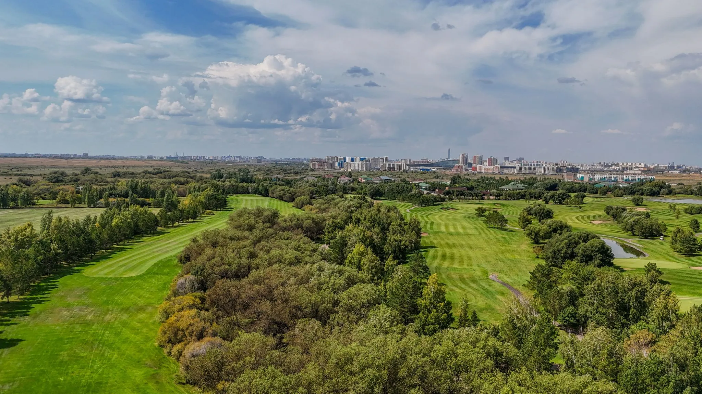

Our Story
Astana Golf Club is the best place to play golf in Kazakhstan, and it's located on the edge of the city of Astana. It offers top-notch sports and elegant relaxation. The club was built to international standards and is located just minutes from the capital city in an expansive steppe landscape. It gives golfers an amazing experience. The 18-hole championship course at Astana Golf Club was designed to be difficult for professional players but fun for golfers of all skill levels. In addition to the fairways, the club has a modern clubhouse, fine dining, practice areas, and places for private events. Astana Golf Club was built to raise the level of golf culture in the area. It has become a center for sports, society, and business, and its members and guests experience tradition and innovation in every detail.